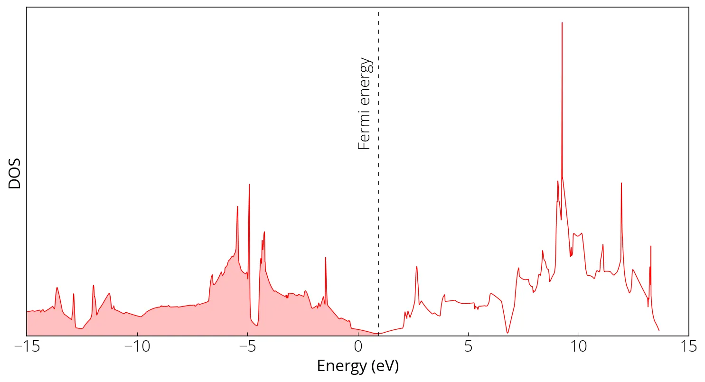
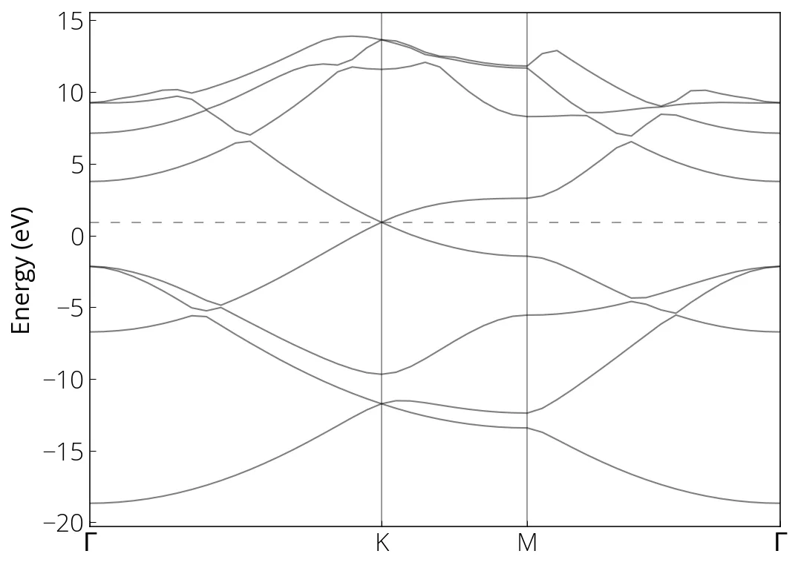

Grafeno
I am following this example from the ICTP online school 2021.
Graphene is single layer of carbon atoms. First perform the self consistent
field calculation to obtain the Kohn-Sham orbitals. Please check the input files
in GitHub repository. Run pw.x:
pw.x -i graphene_scf.in > graphene_scf.outNext increase the k-grid, and perform the non-self-consistent field calculation.
pw.x -i graphene_nscf.in > graphene_nscf.outDOS calculation
dos.x -i graphene_dos.in > graphene_dos.out
Bandstructure calculation
First run the bands calculation for given k-path:
pw.x -i graphene_bands.in > graphene_bands.outFollowed by the postprocessing to collect the bands:
bands.x -i graphene_bands_pp.in > graphene_bands_pp.outMake plots:
notebooks/graphene.ipynb
import numpy as np
import matplotlib.pyplot as plt
data = np.loadtxt('../src/graphene/graphene_bands.dat.gnu')
k = np.unique(data[:, 0])
bands = np.reshape(data[:, 1], (-1, len(k)))
for band in range(len(bands)):
plt.plot(k, bands[band, :], linewidth=1, alpha=0.5, color='k')
plt.xlim(min(k), max(k))
# Fermi energy
plt.axhline(0.921, linestyle=(0, (8, 10)), linewidth=0.75, color='k', alpha=0.5)
# High symmetry k-points (check bands_pp.out)
plt.axvline(0.6667, linewidth=0.75, color='k', alpha=0.5)
plt.axvline(1, linewidth=0.75, color='k', alpha=0.5)
# text labels
plt.xticks(ticks= [0, 0.6667, 1, 1.5774], labels=['$\Gamma$', 'K', 'M', '$\Gamma$'])
plt.ylabel("Energy (eV)")
plt.show()
Conteúdo adaptado de DOS and Bandstructure of Graphene, do Quantum Espresso Tutorial de Pranab Das, sob licença CC BY 4.0. Alterações: layout, título e navegação traduzidos para o português.